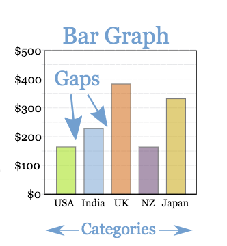
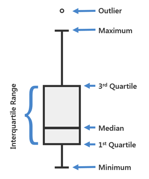
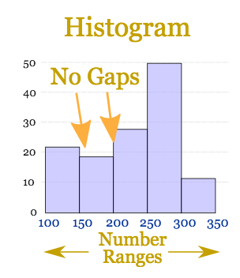
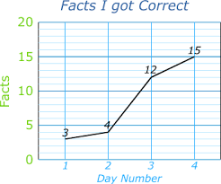

Welcome to DataViz!
In this Section You Choose a Data Visual to
Generate and Engage With.


Box-Plot: A data visual that show groups of numerical data through quartiles. A box plot displays median, higher/lower quartiles and maximum/minimum. Outliers may be plotted as individual points.

Histogram: A data visual that groups numeric data into bins, displaying the bins as divided columns. Histograms have no gaps.

Line Plot: A data visual that shows information that is connected in some way (such as change over time).